|
|
|
Let us take a material system MS1, with the spatial position 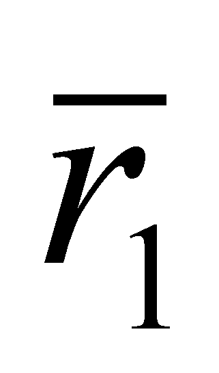, which is momentarily considered as invariant against an external RSe. In such conditions, any flux defined against RSe and which intersects RBS of a MS1 is considered (for this MS) as an active flux, because it is able to generate an action on the system. The intensity of these fluxes is equal with the attribute amount which is carried in a time unit through a motionless imaginary surface, normal on the flux line. In case of our material system, the agent fluxes are decomposed on RBS into trafluxes and refluxes, and the traflux enters into the system by modifying its internal state first, and then, its external one. The traflux intensity is the integral on RBS of its normal and tangential component, determined into the time unit as well; the normal component shall provide the normal traflux (component T of the traflux) and the tangential one, shall provide the tangential traflux (component R of the traflux). The fluxes distribution is also similar in relation with the internal RS (which shall be referred to as RSi) of MS1, with just an origin displacement.
All goes well as long as MS1 stands still. But, what it happens if becomes variable, which means that MS1 shall be moving with the velocity 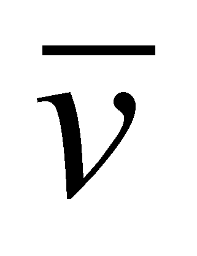 (determined against the same external RSe)? It is natural to presume that all the distributions of the fluxes which are incident on RBS of MS1 would be changed because their transfer rates by means of RBS shall be vectorially composed on RBS of MS1, with velocity , and even more, all the motionless material systems (against the same external RSe) which are placed on the motion direction of MS1 shall become fluxes (for MS1), but this time, they are defined against the internal RSi of MS1, and they are fluxes which shall move with the velocity -against RSi. If the fluxes which were determined against an external RSe (considered as an absolute RS) may be called absolute fluxes, the fluxes whose transfer rate is determined against an internal RSi of a MS shall be called relative fluxes against that particular internal RSi.
But, my dear reader, we have seen that any material flux which is incident on a RBS of a MS and which has a component sent inward (traflux), regardless of its name, is an agent flux, which generates an action on that MS; similarly, a relative (at the internal RS of a MS) flux can be an agent flux for that MS, the action produced by it on a driven MS has a special name even since the Newton’s time – that is reaction.
Otherwise speaking, the reaction is a response of a driven MS, to the action of an external flux, response which consists in the state modification produced on the agent flux by the reaction flux100 generated by the driven object, that is a flux which occurs as a result of a relative motion.
Let us assume that we have two material systems MS1 and MS2 which deploy an even motion (with constant velocity against an external RSe), with velocity 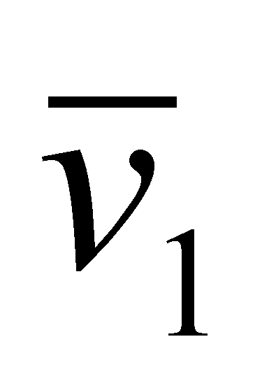, respectively 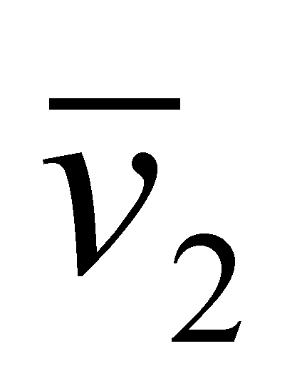. The two velocity rates are given by the following relations:
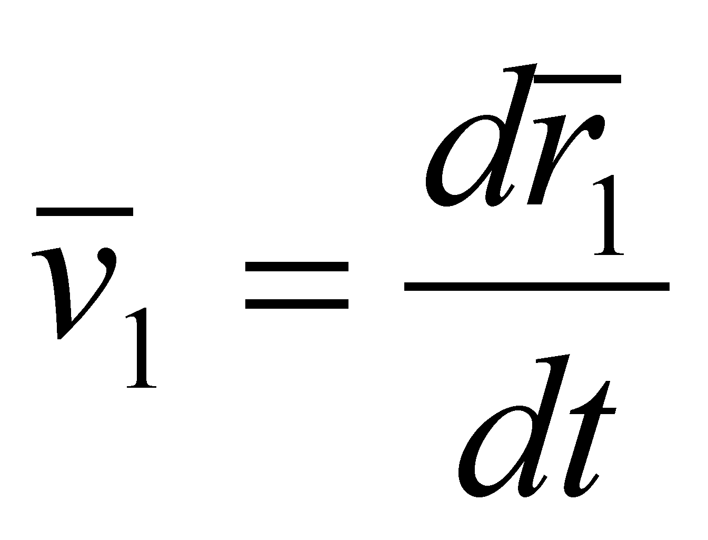 (X.7.1.a)
and:
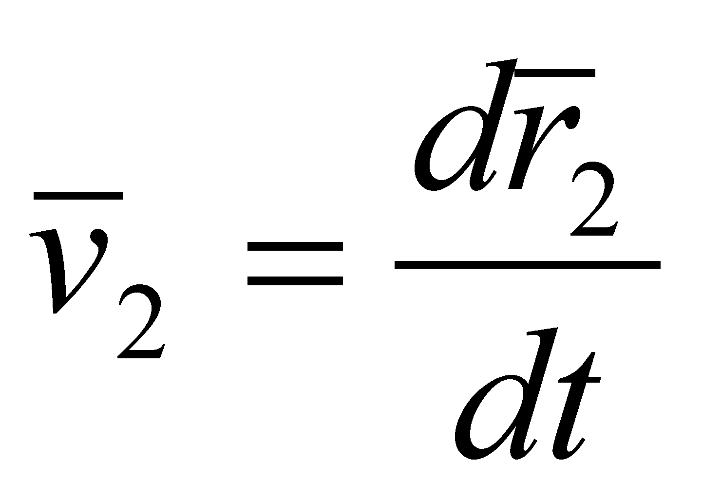 (X.7.1.b)
where and 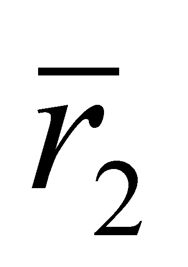 are the position vectors of the two MS, and 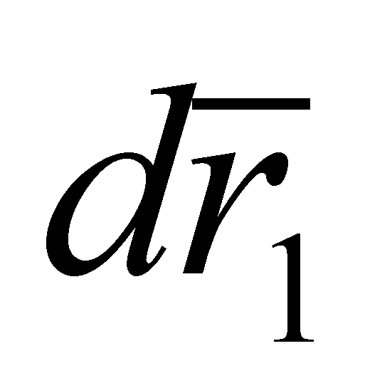, 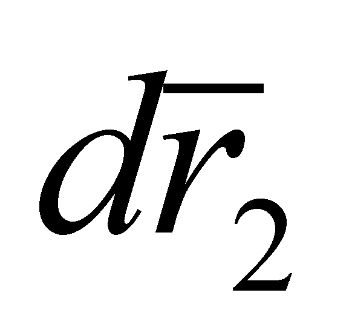 and dt are elementary variations under the meaning given by the objectual philosophy (not in the sense of the classic differential calculus, see the chapters 2, 3, 4 and the annex X.3). The internal references T of the two MS have a relative position one against the other:
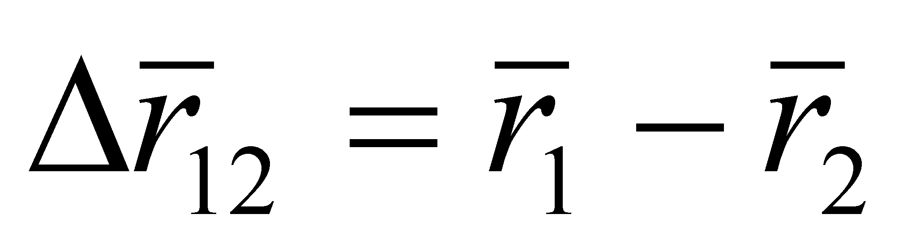 (X.7.2.a)
and:
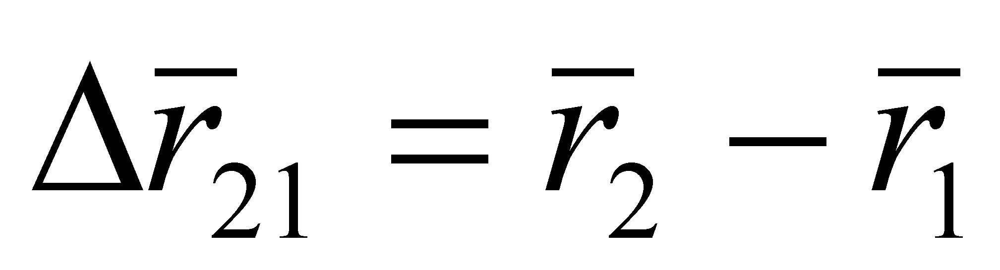 (X.7.2.b)
If the relative distance (position) vectors 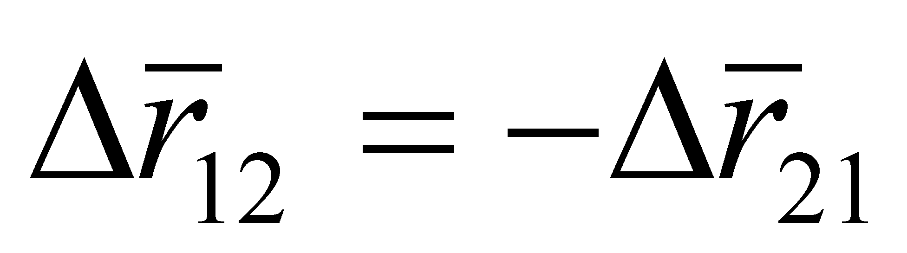 are coplanar with the vectors and (which means that the mixed product of the three vectors is null), then, the fluxes T generated through the translation motion of the two bodies can be intersected one another101, which means that the two MS shall interact (by means of collision) in a future moment. In this case, the relative transfer rates102 of the two fluxes shall be:
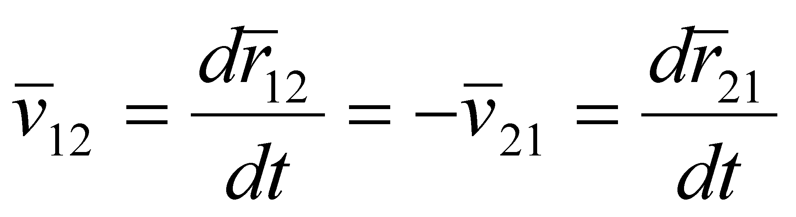 (X.7.3)
namely, in case of the relative fluxes
between the elements of a MS couple, their relative transfer rates
shall be always equal and shall have an opposite sign103,
regardless of the absolute values of the two velocity rates and
regardless of their evaluation moment.
100 The reaction flux is another denomination given to the relative flux of a driven MS. The name relative fluxes is more general, being also applicable in case of the fluxes which do not interact, but they are only determined against an internal RS of a MS.
101 The intersection conditions of the fluxes are more numerous, but for avoiding to make the presentation too complicated, we shall focus only on the coplanarity.
102 Attention ! We are talking only about the transfer rates, not about the intensity of the two fluxes.
103 As for a straight line segment (distance between the two MSs) which is either elongated or shortened, it is not the motion of the two ends which matters, but only the modulus variation.
Copyright © 2006-2011 Aurel Rusu. All rights reserved.